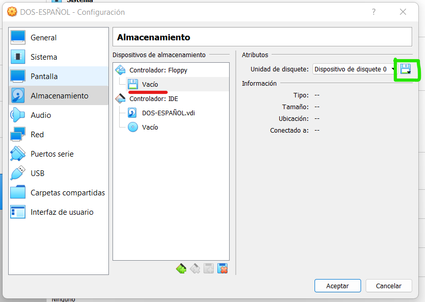

A continuación dejaré un enlace para descargar el .exe para la instalación de VirtualBox:
Descarga de VirtualBox (Windows)Abrimos el ejecutable, y nos guaiará por una instalación. Dejamos todas las opciones por defecto, y finalizamos la instalación. Entonces nos vamos al escritorio, y abrimos VirtualBox. Al abrirlo nos aparecerá la siguiente pantalla:

Ahora debemos crear nuestra maquina virtual. Esto es porque de lo que se encarga VirtualBox es de "simular" un entorno de hardware idóneo para, por ejemplo, MS-DOS, ya que el hardware actual de nuestros daría muchas incopatibilidades de drivers, gestión de procesos o gestión de memoria, entre otros. Para crear una maquina virtual para instalar MS-DOS, seleccionamos la opción Nueva:

Una vez seleccionada, nos saldrá una ventana donde debemos escribir un nombre para nuestra maquina. En nombre es indiferente, sino que lo que importa es seleccionar el tipo de sistema operativo a instalar. Para seleccionar MS-DOS, escogemos en Tipo la opción Other, y en Versión MS-DOS

En el apartado de RAM, lo dejamos por defecto.
En la parte de creación de disco duro, lo dejamos como se encuentra, y le damos a crear. Nos saldrá una ventana, en la que presionaremos todos Next y Crear hasta finalizar el proceso.
Nos aparecerá en la barra izquierda un simbolo indicandonos la maquina.
A continuación, dejo los archivos necesarios de instalación de MS-DOS (una de las versiones está en Español, mientras que la otra se encuentra en Inglés). Para utilizarlo, debéis descomprimirlo anteriormente.
Microsoft MS-DOS 6.22 (Español)Para cargar los archivos de instalación en la maquina virtual, nos metemos en Configuración
Una vez dentro, nos vamos a Almacenamiento, y hacemos click sobre el floppy disk (marcado en rojo en la imagen), y posteriormente, clickamos el disquete (marcado en verde):
Se nos abrirá un desplegable, en el que tenemos que escoger Seleccionar un archivo de disco.. Entonces nos vamos a la carpeta que hemos descomprimido anteriormente con los archivos de sistema. Seleccionamos el archivo Disk 1. Una vez hecho esto, nos saldrá cargado en la unidad, como se puede ver en la siguiente unidad:
Damos a Aceptar para cerrar la ventana, y damos al icono de Iniciar. VirtualBox abrirá una ventana, donde nos aparecerá en el centro MS-DOS 6.22. En caso de que nos aparezca la siguiente ventana, presionamos Cancelar, ya que nosotros ya tenemos cargado el archivo de imagen con el sistema operativo en la unidad :A.
Es ahora cuando comenzamos la instalación de MS-DOS. Nos aparecerá una pantalla de fondo azul. Esto es la guia de instalación del propio MS-DOS.
A partir de este punto, el proceso de instalación viene guiado por este instalador, y basta con leer e ir avanzando en la instalación según nos va recomendando. Lo único que teneis que tener en cuenta es que llegado el último paso de la instalación, que es la instalación en el disco duro del sistema operativo y sus archivos, nos pedirá que cambiemos el disquette.
Esto se debe a que como el sistema operativo ocupaba varios megas, y un disquete únicamente tenía capacidad para 1.44Mb, se dividía en varios disquetes. Para cambiar el disquete, debemos irnos a la esquina derecha inferior, y seleccionar el disquette haciendo click derecho sobre él.

En el desplegable, tenemos que escoger Seleccionar un archivo de disco.., y escoger el disquete que pide. En este caso por ejemplo solicita el Disco 2, asi que seleccionaremos el archivo llamado Disk 2.
Este proceso se dará varias veces. Una vez finalice, nos pedirá retirar los discos de todas las unidades de disquete. Esto significa dejar vacías las disqueteras. Para vaciar la nuestra, la :A, haremos click derecho sobre el simbolo de la esquina derecha inferior (el mismo que en el apartado anterior), y seleccionamos Eliminar disco de la unidad virtual.

Una vez vaciada, seguimos las instrucciones del instalador, y nos aparecerá la pantalla de "inicio" de MS-DOS, desde la cual podremos escribir los comandos que queremos ejecutar.